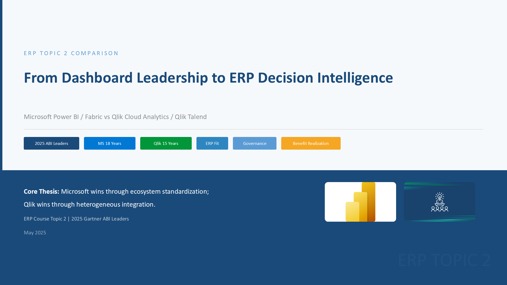
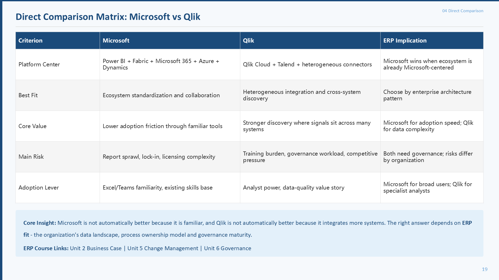
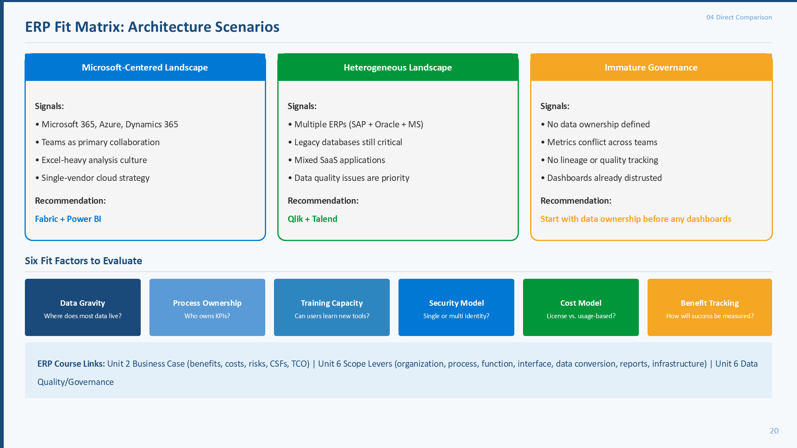
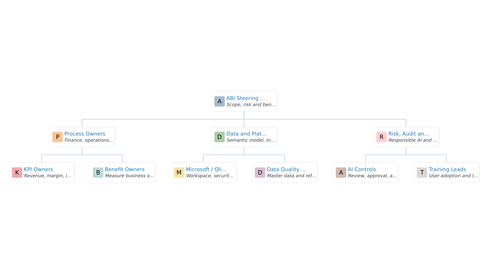
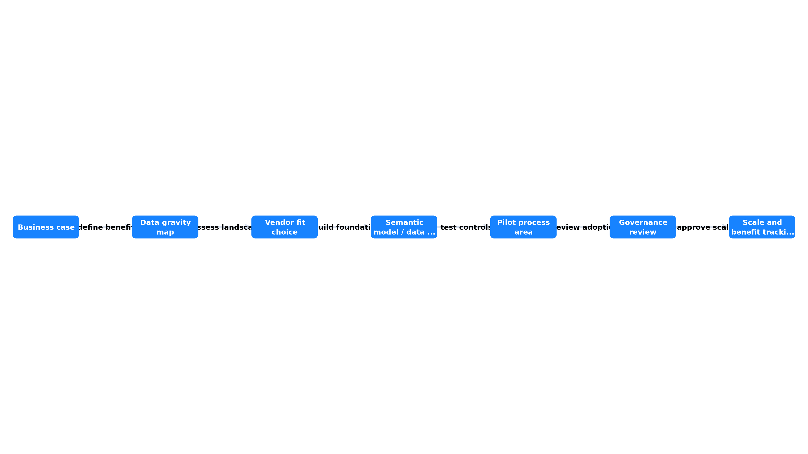
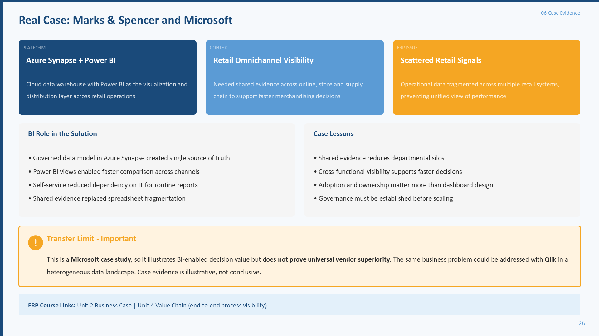
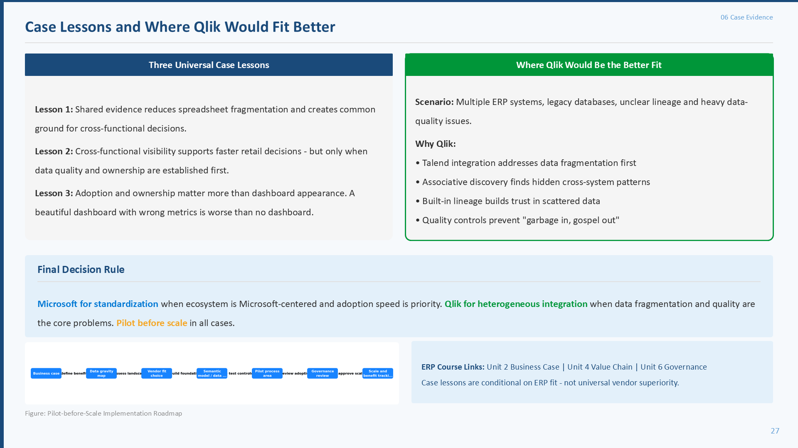

从仪表盘到 ERP 决策智能
本网站基于最终报告 DOTE6940I_Group_Project_Report_Enhanced 和最终 PPT：From Dashboard Leadership to ERP Decision Intelligence: Microsoft Power BI/Fabric vs Qlik Cloud Analytics/Qlik Talend。中文负责讲清楚“为什么这样比较”，英文术语负责和报告、PPT、演讲稿对齐。

Topic 2 到底要求比较什么
这不是普通产品介绍，也不是 Gartner 排名解读。最终 PPT 把题目拆成五个任务：长期 Leaders、功能特征、市场接受、优缺点、真实案例和 ERP 启示。
作业要求 -> 网站回答
最终报告精读：一章一章讲清楚
下面按最终报告的真实章节来解释。每一张卡片都回答三个问题：报告这一章说什么、为什么对 ERP 重要、它对应 PPT 哪几页。
用最简单的话理解报告主线
如果完全没学过这门课，可以先读这一段：报告其实是在把“买 BI 平台”翻译成“ERP 实施决策”。
Microsoft 和 Qlik 都是长期 Gartner ABI Leaders，满足题目要求。
Microsoft 靠熟悉生态和协作，Qlik 靠跨系统整合和数据质量。
看 business case、benefit owner、data governance、scope control 和 adoption。
Microsoft for standardization; Qlik for heterogeneous integration; pilot before scale.
每个主要知识点怎么理解
下面不是术语表堆砌，而是报告和 PPT 后面所有判断的基础。每个知识点都给出中文解释、英文对比、ERP 小例子和对应 PPT 页面。
两家公司产品图片与 ERP 适配路线
产品图片只用于帮助理解平台定位，不把网站做成营销页。判断仍然回到 ERP：数据在哪里、谁负责指标、用户能否采纳、治理能否跟上。
不是谁绝对赢，而是谁更匹配
最终报告和 PPT 的比较方法是一致的：capability、fit、governance、adoption、risk。不要把 Microsoft 写成默认赢家，也不要把 Qlik 写成备用选择。
| 判断维度 | Microsoft Power BI/Fabric | Qlik Cloud Analytics/Qlik Talend | ERP 含义 |
|---|---|---|---|
| 平台中心 | Microsoft 365、Teams、Excel、Azure、Dynamics、Fabric | Qlik Cloud Analytics、Talend integration、associative engine | 先看企业已有系统环境和数据重心。 |
| 最佳适配 | Microsoft-centered landscape，需要快速统一 KPI 和协作 | Heterogeneous landscape，需要跨 ERP、旧系统、SaaS 整合 | 工具选择要匹配真实数据问题。 |
| 核心价值 | 熟悉工作环境、语义模型、协作和安全控制 | 数据整合、质量、血缘、关联分析和主动提醒 | 价值不是界面漂亮，而是流程决策更可信。 |
| 主要风险 | report sprawl、capacity cost、vendor lock-in、AI over-trust | training burden、governance workload、master data discipline | 强工具也可能失败，关键是治理和变革管理。 |


买工具之后，真正决定成败的事
报告第 5 和第 7 章、PPT Slides 21-25 是 ERP 课程味道最强的部分：平台只是工具，成功要靠收益负责人、价值链可视性、变革管理、数据治理和范围控制。


Marks & Spencer 案例应该怎么用
报告第 6 章用 M&S 案例说明 Azure Synapse + Power BI 可以支持零售多渠道可视性和共享证据。但它不能证明 Microsoft 永远优于 Qlik，它只能支持“共享数据有助于更快决策”这个 ERP 启示。


最终 PPT 28 页逐页导览
下面使用从最终 PPT 直接导出的 28 张 16:9 页面图。它和上面的最终报告解释是同一条逻辑：报告负责展开论证，PPT 负责压缩展示。
来源、图片依据与证据边界
官方网页图和官方证据图用于事实依据；MCP 图用于教学解释；PPT 页面图用于和最终演示稿对齐。最终报告也明确避免虚构 ROI、vendor score、benchmark 或自编市场排名。
Leader 年限、产品说明和案例网页只作为事实依据，不直接推出绝对胜负。
MCP 可视化解释 business case、governance、scope control、AI boundary 等概念，不代表官方评分。
28 张 slide 图片来自最终 PPT 导出，用于教学对应，不再引用旧 PPT 作为主索引。